A MAGYAR LABDARÚGÓ-VÁLOGATOTT
Főoldal
Játékoskeret
Szövetségi kapitány
Stadion
Kapusok
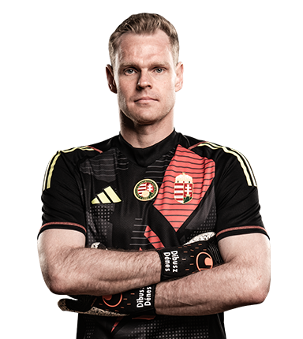
Dibusz Dénes
Poszt: Kapus
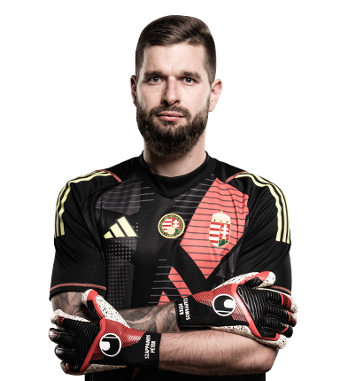
Szappanos Péter
Poszt: Kapus
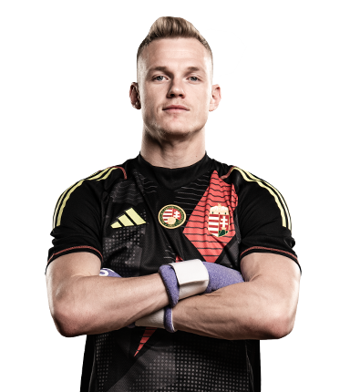
Tóth Balázs
Poszt: Kapus
Védők
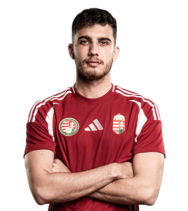
Balogh Botond
Poszt: Védő
Bolla Bendegúz
Poszt: Védő
Botka Endre
Poszt: Védő
Dárdai Márton
Poszt: Védő
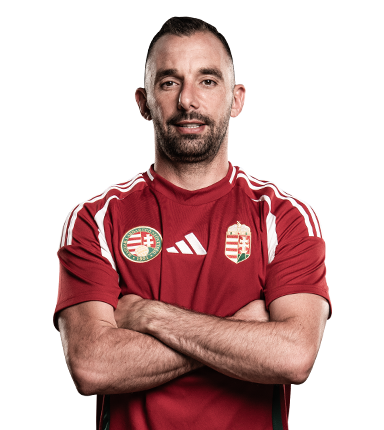
Fiola Attila
Poszt: Védő
Nagy Zsolt
Poszt: Védő
Szűcs Kornél
Poszt: Védő
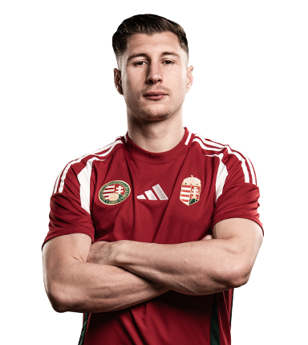
Willi Orbán
Poszt: Védő
Középpályások
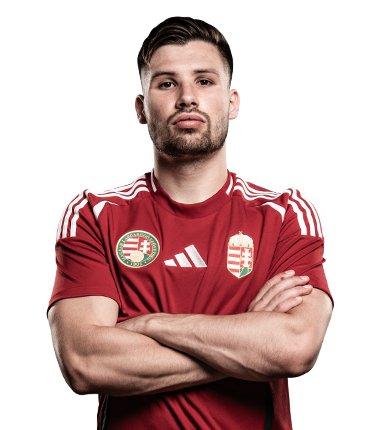
Kata Mihály
Poszt: Középpályás
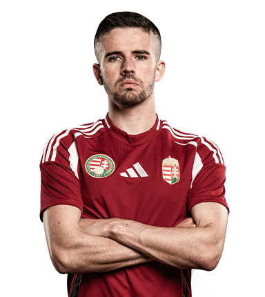
Nagy Ádám
Poszt: Középpályás
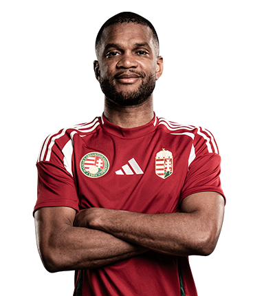
Loic Nego
Poszt: Középpályás
Nikitscher Tamás
Poszt: Középpályás
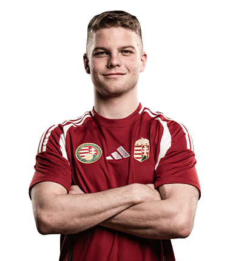
Schäfer András
Poszt: Középpályás
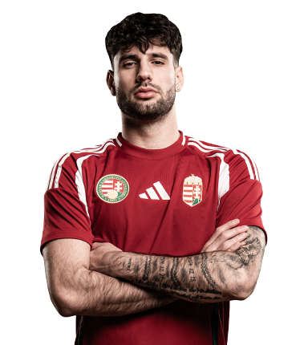
Szoboszlai Dominik
Poszt: Középpályás ©
Támadók
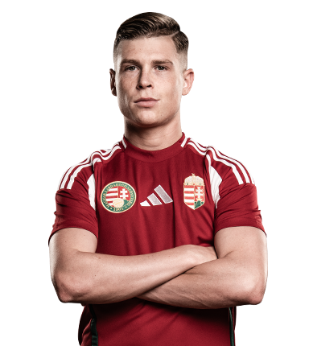
Csoboth Kevin
Poszt: Támadó
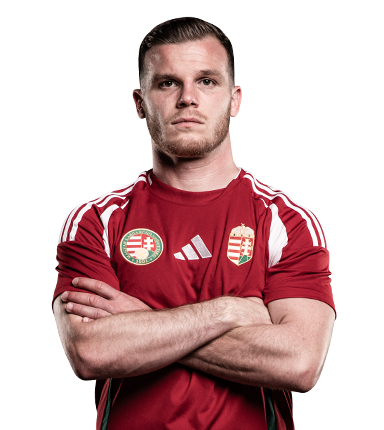
Gera Dániel
Poszt: Támadó
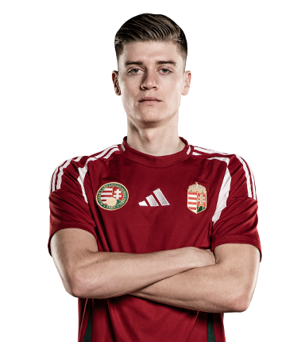
Gruber Zsombor
Poszt: Támadó
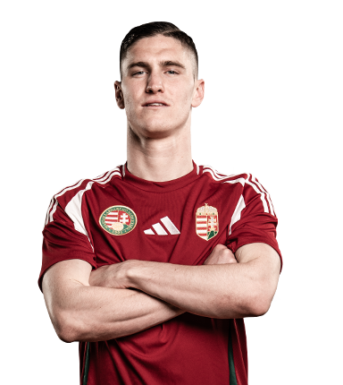
Sallai Roland
Poszt: Támadó
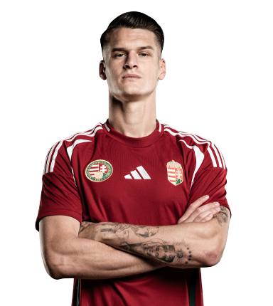
Szabó Levente
Poszt: Támadó
Varga Barnabás
Poszt: Támadó